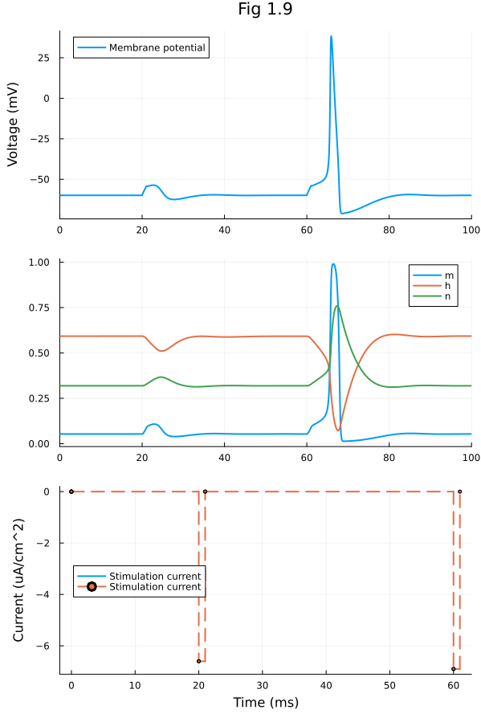

Fig 1.09#
Hodgkin-Huxley model
using OrdinaryDiffEq
using ModelingToolkit
using Plots
Plots.default(linewidth=2)
Convenience functions
hil(x, k) = x / (x + k)
hil(x, k, n) = hil(x^n, k^n)
exprel(x) = x / expm1(x)
exprel (generic function with 1 method)
HH Neuron model
function build_hh(;name)
@independent_variables t
@parameters begin
E_N = 55.0 ## Reversal potential of Na (mV)
E_K = -72.0 ## Reversal potential of K (mV)
E_LEAK = -49.0 ## Reversal potential of leaky channels (mV)
G_N_BAR = 120.0 ## Max. Na channel conductance (mS/cm^2)
G_K_BAR = 36.0 ## Max. K channel conductance (mS/cm^2)
G_LEAK = 0.30 ## Max. leak channel conductance (mS/cm^2)
C_M = 1.0 ## membrane capacitance (uF/cm^2))
iStim(t) = 0.0 ## stimulation current
end
@variables begin
mα(t)
mβ(t)
hα(t)
hβ(t)
nα(t)
nβ(t)
iNa(t)
iK(t)
iLeak(t)
v(t) = -59.8977
m(t) = 0.0536
h(t) = 0.5925
n(t) = 0.3192
end
D = Differential(t)
eqs = [
mα ~ exprel(-0.10 * (v + 35)),
mβ ~ 4.0 * exp(-(v + 60) / 18.0),
hα ~ 0.07 * exp(- ( v + 60) / 20),
hβ ~ 1 / (exp(-(v+30)/10) + 1),
nα ~ 0.1 * exprel(-0.1 * (v+50)),
nβ ~ 0.125 * exp( -(v+60) / 80),
iNa ~ G_N_BAR * (v - E_N) * (m^3) * h,
iK ~ G_K_BAR * (v - E_K) * (n^4),
iLeak ~ G_LEAK * (v - E_LEAK),
D(v) ~ -(iNa + iK + iLeak + iStim) / C_M,
D(m) ~ -(mα + mβ) * m + mα,
D(h) ~ -(hα + hβ) * h + hα,
D(n) ~ -(nα + nβ) * n + nα,
]
discrete_events = [[20] => [iStim ~ -6.6], [21] => [iStim ~ 0], [60] => [iStim ~ -6.9], [61] => [iStim ~ 0]]
return ODESystem(eqs, t; name, discrete_events)
end
build_hh (generic function with 1 method)
tspan = (0.0, 100.0)
@mtkbuild sys = build_hh()
prob = ODEProblem(sys, [], tspan, []);
sol = solve(prob)
retcode: Success
Interpolation: 3rd order Hermite
t: 191-element Vector{Float64}:
0.0
0.0
0.28649552814014345
0.6282062598888134
1.1292780059864103
1.788539543713246
2.7280332499045175
3.8225722202572276
4.8381191258330505
5.700042620198738
⋮
83.08516202284112
84.68698057714978
86.36486332963332
87.94059887845873
89.94173820482408
92.62531703206089
95.01785835817743
97.77383021285664
100.0
u: 191-element Vector{Vector{Float64}}:
[-59.8977, 0.0536, 0.5925, 0.3192]
[-59.8977, 0.0536, 0.5925, 0.3192]
[-59.896772589630615, 0.053584781785332665, 0.592500685682472, 0.3192027439091019]
[-59.896078417587496, 0.05358354985022893, 0.5925003853539793, 0.31920656870895786]
[-59.895380703866564, 0.05358732070491404, 0.592498563192231, 0.3192127047916002]
[-59.894827103417214, 0.05359154097918554, 0.5924946675523771, 0.3192210724000593]
[-59.894615228409705, 0.05359428457937118, 0.5924881300109393, 0.31923235771422587]
[-59.895058903433394, 0.05359755851450915, 0.5924816552294707, 0.31924307874932606]
[-59.89626981455131, 0.05362509021521666, 0.592478071582578, 0.31925014790461326]
[-59.897715332885845, 0.053671317462498445, 0.5924772857413373, 0.3192539371264496]
⋮
[-59.572130820563586, 0.05528163553485782, 0.5998137910479822, 0.31408876441695316]
[-59.3871345668673, 0.05680384250238176, 0.5959334132688429, 0.31711731314268987]
[-59.46189086252239, 0.05653417089069924, 0.5922688918207137, 0.3196608939048242]
[-59.6584775724364, 0.055315151075761446, 0.5902966928267873, 0.3208642735063084]
[-59.89254468339108, 0.05375574486429041, 0.5899152971842846, 0.3209067357100094]
[-60.01729894521217, 0.052842811719084753, 0.5912755837114657, 0.31984190606389173]
[-59.98360353047786, 0.05299360850324565, 0.59249189738153, 0.31905328165805874]
[-59.908221952306015, 0.053470732806980045, 0.5929547059858569, 0.3188497859029145]
[-59.875031314441145, 0.053704869703465795, 0.592794260614686, 0.3190253805754915]
@unpack v, m, h, n, iStim = sys
p1 = plot(sol, idxs = v, ylabel="Voltage (mV)", xlabel="", label="Membrane potential", title="Fig 1.9", legend=:topleft)
p2 = plot(sol, idxs = [m, h, n], xlabel="")
p3 = plot(sol, idxs = iStim, xlabel="Time (ms)", ylabel="Current (uA/cm^2)", label="Stimulation current", legend=:left)
plot(p1, p2, p3, layout=(3, 1), size=(600, 900), leftmargin=5*Plots.mm)

This notebook was generated using Literate.jl.